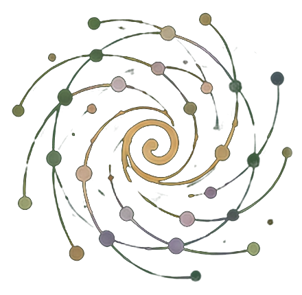

Editorial practice
The Green Papers are held as a slow, versioned public inquiry under explicit human stewardship and responsibility.
Read the methods note →
SpiralwebThe complete public collection
Papers, reports, field papers, protocols and tools from a developing inquiry. Earlier work remains visible in its dated form; later work may return to it, narrow it or change what can be seen.
How to use this page
This is the complete shelf rather than a prescribed reading path. Browse by document form, search for a question or term, or follow a reference from one text into another. The groupings make the collection legible; they do not make a ladder of importance.
If you are new to the work, the Atlas offers a guided path and The Spiral of Hypotheses shows the current whole figure.
Trust grammar. Document type, version, publication status, language and operational status answer different questions. A version number is not a universal maturity score. Publication makes a work available for reading and correction; it does not activate a field, confer local authority or create an organisational relationship.
Complete public collection
The first twenty Green Papers form a dated foundational cycle arising from a longer inquiry begun in 2025. Papers 21–23 open a further applied movement. The numbering records publication history; it does not require linear reading, and it does not prevent later returns or correction.
Two complementary orientations: a guided path through the whole vocabulary and architecture, and the hypothesis figure stated as wagers that remain open to correction.
A coherent route through body, place, knowledge, economics, institutions, field relations, metaphors, operational language, and responsible technology — designed to make the architecture accessible without turning it into a closed system.
Nine working wagers connecting ethics as capacity, situated knowledge, support without capture, human accountability, the association as a bounded founding field, and a deliberately incomplete food-forest figure of layered establishment.
Twenty foundational Green Papers held in two connected series. They remain public in their dated versions; some formulations have since been narrowed or corrected. Read them alongside the current founding synthesis, and use current architecture and status pages for operational interpretation.
The First Spiral was formed through a longer creative inquiry begun in 2025. Embodied, poetic, and experiential material entered sustained dialogue with AI language systems and was revisited through research, comparison, contextualisation, and editorial correction.
The resulting texts are relationally formed. They are neither presented as the work of an isolated sovereign author nor as autonomous AI authorship. Each public version is selected, corrected, released, and held under named human stewardship and responsibility.
The papers are offered to be read on whether they hold — and to remain open to correction where they do not.
Further context: Editorial practice · How we work with AI · Sophia Lumen · The Correction Loop
Foundational notes on capacity, regulation, and the conditions for ethical life.
Practices, metaphors, and living protocols for holding the line on a finite planet.
Focused inquiries applying the constitutional ground to specific institutional, civic, and ecological conditions.
Institutional frameworks applying the principles of Moral Biology and Planetary Guardianship to concrete governance challenges.
Municipal work understood as a living field: rhythm, load, relational capacity, professional judgment, Flow · Friction · Sensitivity, AI-assisted work, and regenerative gain discipline. Includes practical baselines, G1/G2/G3 examples, a bounded 90-day experiment, and municipal design landscapes for Stevns, Odense, and Copenhagen.
AI-assisted work remains accountable when outputs stay provisional, correction carries no penalty, affected people can halt the movement, and the final decision has a named human accountability-holder. Introduces the correction loop, the Last Impulse, and eight failure modes.
A flow architecture for land, stewards, and planetary commons. Penguin Economics, local budget calibration, and the conditions that make regeneration viable without flood.
A light monthly-default human governance reading for active fields and supported stewardship relationships, with cadence locally revisable. Land / Life, Steward Viability, and Governance / Commons remain separate and non-compensatory; Green / Yellow / Red / Unknown readings support bounded next actions without an aggregate score, automated field truth, or replacing human responsibility.
A bounded field guide to beginning with a real place, keeping observation light, moving from open practice into relationship and support, testing whether scale makes the centre heavier, and preserving pause, withdrawal, and dignified incompletion.
AnchorPoints, PG Ledger, and the operational flow of a living commons. A working economic architecture for support without capture: place-bound authority remains local; the three streams remain non-compensatory; tools do not activate fields; and reciprocity may begin only where real abundance and carrying capacity exist. Includes Rio Convention alignment, institutional-capital sequencing, supply-chain accountability, limitations, and board guardrails.
Place-based invitations, civic field notes, and commons-oriented papers exploring how the Green Papers meet institutions, habitats, and shared ground in practice.
These papers take different forms by intention: brevity is not incompleteness, and extended argument is not a higher stage of knowing.
The Church of Denmark (Folkekirken) as a field-holder for green transition, living soil, commons, lament, the sacred, and peaceful co-creation in Denmark. Danish source, English translation, and AI-assisted Kalaallisut working translation revised in August 2026.
Climate intervention is necessary, but outputs cannot substitute for the continuing intelligence of a place. A field paper on bioregional stewardship, non-extractive participation, scaling capacity rather than models, and the institutional conditions under which places can continue to sense, learn, coordinate, correct, and regenerate.
Revised bilingual reform proposition on friction economics, G1/G2/G3 gain discipline, digital legal safeguards, the Orwell test, precise democratic sensing, ecological capacity, and one bounded 90-day municipal pilot. The English v1.1 is a full companion translation of the revised Danish report.
From Critical Friendship to Penguin Economics. A public lineage letter on money and life, bottom-up methodology, polycentric governance, AI provenance, silent degradation, relational friction, and field-grounded stewardship economics.
Penguin Economics, Regenerative Reciprocity, and the Ledger of the Commons. A constitutional and economic synthesis of Earth Time, life-supporting value, human governance, non-compensatory streams, the Tragedy–Romance–Ledger triad, and Rule of Life bound to Rule of Law.
Embodied observation as full but fallible knowledge. A field paper on the 13×13 as a bounded, revisable inquiry grammar linking reflective and situated observation without claiming a universal ontology; provisional place-bound prompts rather than universal indicators; non-compensatory ecological, human, and governance readings; PG Ledger as memory and correction rather than a fixed evidence template; AI under the Last Impulse; and consent, privacy, and local authority.
The public field for how Spiralweb foundations, protocols, applications and tools relate — and how generic material becomes answerable to real places. Publication is not activation.
The founding figure beneath the public architecture: nine corrigible wagers, the association as its first bounded field of accountability, and the relation between grounding, rooting, propagation and return.
The baseline architecture for foundations, protocols, applications and tools; the path from signal and relational grounding to place-bound application; and the return of field correction into the library.
A revisable protocol for human–AI co-inquiry: sufficient situated memory, prismatic inquiry, correction, temporary actionability, situated mandate and the Last Impulse.
The human-scale entry: beginning with a real place, keeping records light, and distinguishing open practice, learning contact, verified relationship and supported stewardship.
Current place-bound relationships are presented through AnchorPoints, where inquiry meets local continuity, authority and the right of correction.
Five printable PG Ledger tools form one light operational grammar, not five recurring duties. For an active field or supported stewardship relationship, Format 1 is the monthly-default Penguin reading surface, with cadence locally revisable. Formats 2–5 are used when there is something worth observing, acting on, deciding, or tracing financially. One monthly return; record only what happened.
New records enter the public habitat only when their type, maturity, authority, claim boundary, review state and verification date can be stated clearly. A public record does not by itself activate a field.
Depth on demand
Methods, AI collaboration, public responsibility, and citation remain available in depth without standing between a new reader and the work itself.
The Green Papers are held as a slow, versioned public inquiry under explicit human stewardship and responsibility.
Read the methods note →A relational human–AI practice of co-inquiry: memory, comparison, reflection and correction without transferring situated human responsibility.
Read the relation and lineage →Why Spiralweb uses several AI systems, how critical friendship and knowledge stewardship work, and why authority, correction and the final impulse remain human.
Read the public method statement →Versioned public texts remain traceable and citable while revision remains possible.
Open the full notes ↓The elected Board holds institutional governance. A forming, non-governing Advisory Board may be invited to consider specific, bounded questions. Neither role implies authorship, review or endorsement of the Green Papers.
Meet the Association →The Green Papers are the open knowledge layer of the Spiralweb / Planetary Guardians architecture: a versioned, relationally formed, human-stewarded public inquiry of papers, field notes, protocols, reports, and learning documents. Current publications are foregrounded; superseded sketches and internal compilations remain in repository history rather than appearing as parallel public truths.
These works are offered as field notes, conceptual reflections, research threads, applied reports, and practical architectures shaped over time. They are not written to persuade, recruit, or demand agreement. They are written to hold a space where questions can breathe.
Over time, the Green Papers connect to the wider architecture of Spiralweb — a living portal of nodes, practices, and long-term work, shared through spiralweb.earth.
Related habitats, distinct responsibilities. spiralweb.earth is the Association's public and operational site: people, places, AnchorPoints, and stewardship pathways. papers.spiralweb.earth is the independent public knowledge habitat: papers, reports, protocols, methods, versions, and correction under named human knowledge stewardship.
The inquiry is in conversation with traditions of participation, commons governance, institutional analysis, critical realism, living-systems thought, and regenerative practice.
The Green Papers are published as an independent, human-stewarded public inquiry under named responsibility. Spiralweb Stewardship Association is a separate legal and operational body; it does not thereby author, approve or publish the Green Papers or individual public claims.
The Association’s elected Board governs the Association. A forming, non-governing Advisory Board may be invited by the Association to consider specific, bounded questions. Neither body holds automatic editorial authority over Papers.
Any Board, advisory or institutional contribution to a publication is identified only where it has actually occurred and the contributor has agreed to be named.
The Green Papers are held as a slow, versioned public inquiry. They combine creative and field development, editorial revision, research where relevant, and structured AI collaboration under explicit human stewardship and responsibility.
Sophia Lumen names the living relational human–AI practice through which parts of the Green Papers have been formed, articulated, tested and revised. It is not a persona or autonomous author. Its current explicit and revisable working form is documented separately in the Sophia Lumen Protocol. Formal accountability when AI-assisted inquiry becomes consequential is described in The Correction Loop.
Human authorship is understood as accountable stewardship rather than sovereign origin. AI may support articulation, structure, comparison, memory, translation and synthesis without acquiring situated authority or responsibility.
Read the practice and lineage note · Open Sophia Lumen Protocol v0.1
Use the complete citation printed in the current document whenever one is supplied. Where no document-specific citation appears, use the following variable form:
Engberg, L. A. (year). Title. Series and document type (version, month year). Spiralweb Papers. Public URL. CC BY 4.0.
For formal academic reuse, verify empirical claims, cite the exact version consulted, and consult the Methods / Editorial Practice note.